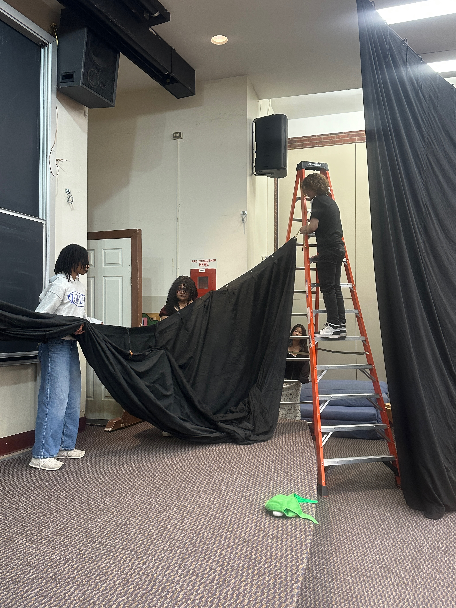
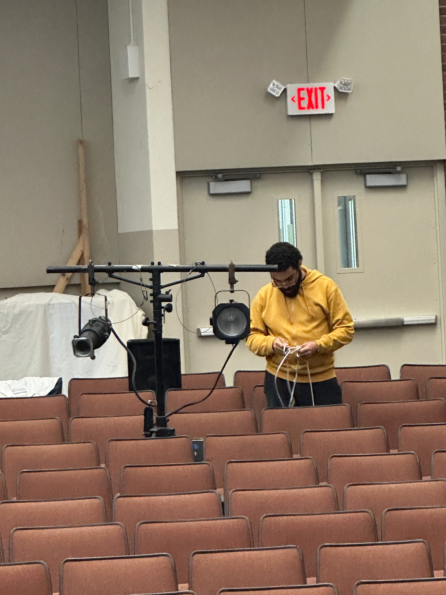
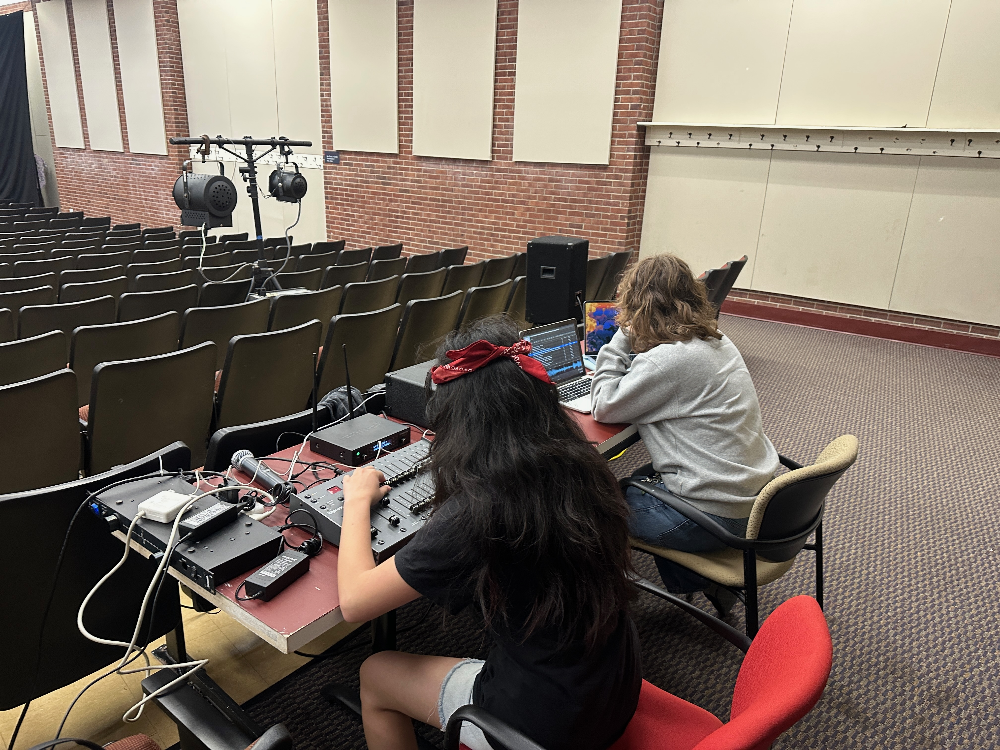
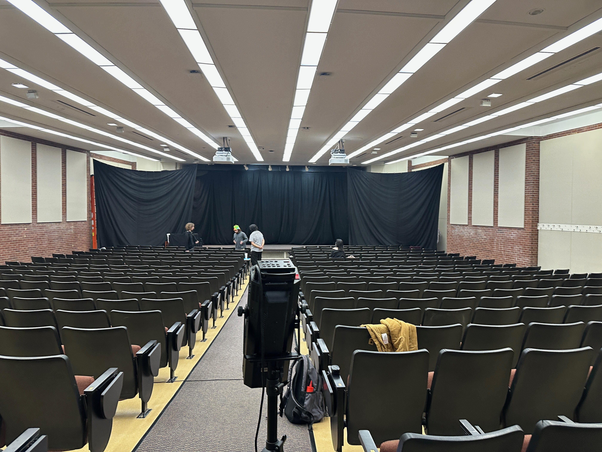

The main space I have participated in recently is through a Rutgers club called The College Avenue Players (CAP). I have been doing theater with them for the last two years now. We have a unique theater space because we operate out of a lecture hall. In this page, I will be showing how we transform the room from a lecture hall into a theater space. I wanted to show this instead of giving a tour or a typical theater to emphasize that theater can happen out of any space.

The first part of transforming the lecture hall is hiding the blackboard, as well as creating some sort of backstage area. To achieve this, we put up two smaller curtains on the sides and one larger curtain that goes across the back of the stage. There are hooks that come down from the ceiling to help us put up the curtain. When putting up the larger curtain, as seen in the picture we often need more people to hold up the curtain because of its size.
The curtains do a lot of work in helping the lecture hall to feel more like a theater space. There are some downsides to the “backstage” being a curtain on the side. The main one is that because there is only a piece of fabric between that area and the audience, any noise that it makes is very easy to hear. As an actor, it can be a lot of fun to hear the audience from backstage, but for the audience any noise we make can distract from what is happening on stage. It is also a small area so it can start to get a little crowded when there are multiple actors waiting to go onstage.

While the curtains are being put up we have to take out the rest of our equipment such as tech, props, and costumes. We keep the props and costumes in the areas behind the chalkboard. We also keep some of the larger items in the back of the room such as our couches, larger props, and the tech equipment. To set up the backstage area we take out a table for each side where we lay out the props. We also set up a clothing rack on each side for actors who have a quick change. We have to use the other lecture hall on the other side of Scott Hall as our dressing room and sometimes actors don’t have time to go around and change before they have to be back onstage so in these cases we do a quick change backstage.
To set up the tech equipment we have to take everything out of the boxes in the back. Starting with the lights we have two T-shaped stands shown in the picture that we hang the lights on. We also have two speakers that we place on each side, a few rows behind the light stand. I recently learned how to set up the tech equipment when I was on spotlight for one of the CAP shows. I found there was a bit of a learning curve to figuring out which wire goes where and learning to properly hang up the lights but by the end of tech week, I felt like I had a good handle on being able to set everything up.

Before we can start our run of the show we have to do a few final checks to make sure everything is in order. Backstage we have to make sure that all the props are on the correct side. The stage managers make a list of where each prop needs to be at the start of the show so we’re not scrambling for a missing prop mid-run. The actors also have to make sure that the costumes for their quick changes are set up properly backstage. It can waste a lot of time during transitions if someone doesn’t know where their costume is. Once the actors and stage managers have checked that everything is in the correct place they move to the dressing room to warm up until the show starts.
For tech they have to make sure all the sounds and lights are set up correctly before the show starts. Once the curtain is set up they will turn on the stage lights and adjust them to make sure the stage is evenly lit. They will also cycle through some of the sound cues to make sure they are listed correctly and that the volume of them is not too loud or too quiet. Once that is done, they will start the preshow playlist so there is music going on while the audience files into the room.

Now that the final checks are completed, the room has successfully been transformed into a lecture hall. It may not seem like a big deal to some people but this room has become a special place to me while I've been in college. The College Avenue Players was the first club I joined in college and since my first CAP show this has become a space where I have spent a lot of my time. I’ve made all my friends at Rutgers through the club. It has also shown me that I can have a career in theater outside of just doing acting. My current role as director of communications has led me to explore a career in marketing. I recommend this club to everyone I meet and I hope the people reading this website can see how theater really is for anyone and can be done anywhere.